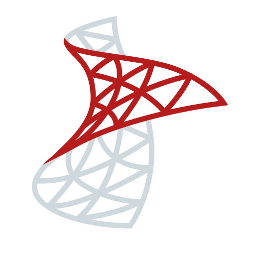

THIAGO ROBLES
BIENVENIDX A MI PORTAFOLIO COMO DESARROLLADOR FREELANCER
PUEDES IMAGINARLO, PUEDES PROGRAMARLO
SOBRE MI
Hola, soy Thiago Robles, un apasionado desarrollador con experiencia en proyectos realizados en C# .NET y React. Me encanta el desarrollo backend y tengo conocimientos en bases de datos relacionales y no relacionales.
Disfruto tanto del frontend como del backend, pero prefiero trabajar del lado del servidor. Actualmente, soy estudiante de la Tecnicatura Universitaria en Programación y estoy próximo a recibirme este año.
Me apasiona trabajar con tecnologías como .NET y React, y siempre estoy buscando aprender y mejorar mis habilidades.
¡Gracias por visitar mi portafolio!
SKILLS
LENGUAJES
FRAMEWORKS
BASES DE DATOS

- 


PROYECTOS
Aquí tienes uno de mis proyectos destacados:
Sistema de Gestión - Una aplicación para gestionar inventarios y ventas, desarrollada con C# .NET y SQL Server.